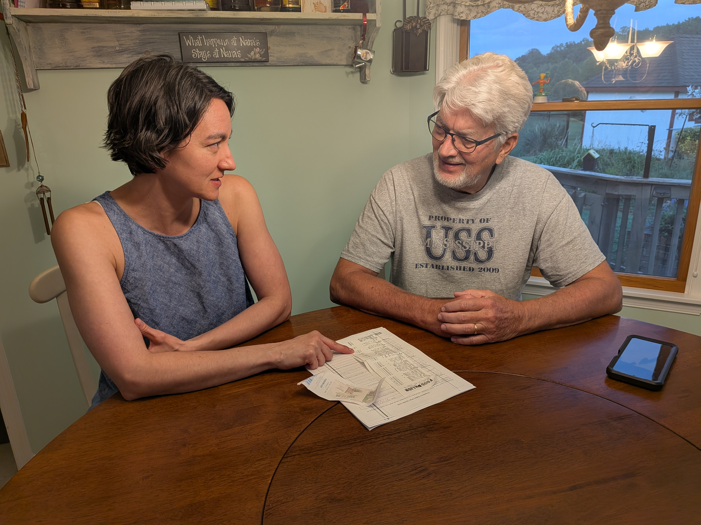

Services
I help seniors, families, and busy professionals stay organized, protected, and stress‑free with reliable bill‑pay and paperwork support.
- Monthly bill organization and payment reminders
- Create a bill pay calendar
- Sorting mail and identifying urgent items
- Setting up autopay and paperless billing
- Budget tracking and simple financial organization
- Help understanding statements and notices
- Support for adult children managing a parent’s bills
- Provide tax support and filing
- In‑home visits for hands‑on support
Your Security Comes First
- Insured & FBI Background Checked for your protection. Proof is provided.
- Privacy and confidentiality always respected
- You stay in control
- No financial decision‑making or check‑signing
About Me
I’m a former home health care worker with years of hands‑on experience supporting older adults. Today, I’m a bookkeeper and bill‑pay specialist who helps seniors and families stay organized, confident, and in control of their paperwork. I’m also AARP Tax‑Aide trained, with three years of experience assisting clients during tax season. I am an IRS and the State of Maryland Acredited Tax Preparer. I’m a happily married mom of a college student and a lifelong Marylander. Let’s Go Orioles!
In the past I served with Girl Scouts for 12 years and AmeriCorps for 1 year. I currently serve at Manna as a site leader and at Journey's Crossing Church in Germantown.

Let's Talk!
My Number:

My Email:
Hello@MyBillHelp.com
My Service Area: Montgomery County, Maryland